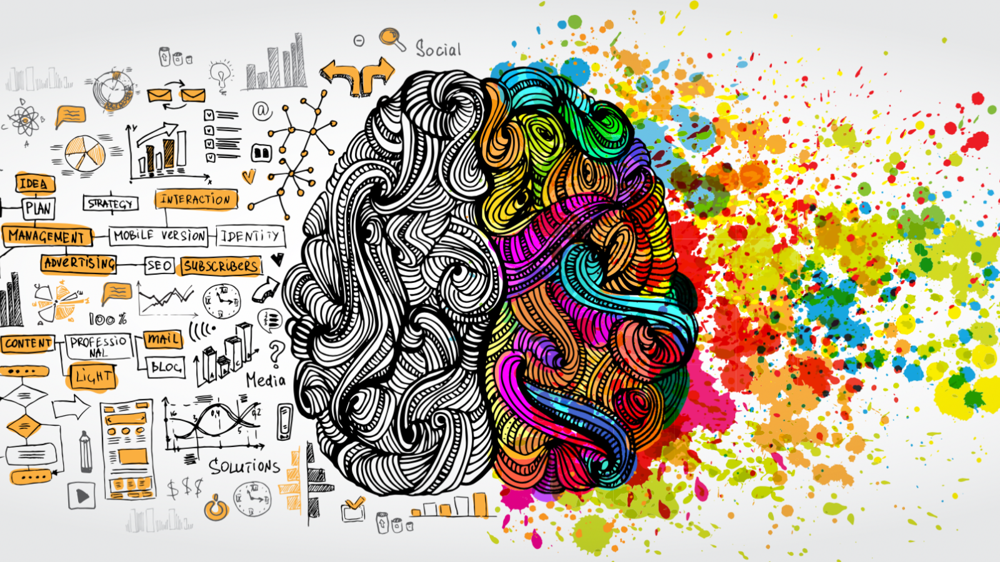

Am I Human?

Sa panahon natin ngayon, maraming innovations and technologies that make our lives easier. There are tools that make things convenient just like AI na ginagamit natin for school, work, and other purposes. But is it a bad thing or a good thing? Tinuturuan ba tayo ng mga innovations na ito maging tamad at umasa sa technology? With all these questions in mind, we can say that it is a double-edged sword — and here’s why.
Humans are naturally wired to survive, cope, and learn. We explore and experiment to adapt. Kapag nahihirapan tayo, naghahanap tayo ng paraan para malampasan ito. Survival of the fittest. But now, technology revolves around us. During my first encounter with AI, hindi ko talaga ito gusto dahil pakiramdam ko hindi naman ako ang gumawa. We used it during high school research and I felt uncomfortable using it. As time passed, lumawak ang sakop ng AI — academics, art, ideas, almost anything. Now that I am in college, malaking tulong ito especially in mathematics and difficult lessons. But the question remains: Are we still human if we depend on AI?

Literally, yes — we are still human. AI is a double-edged sword because good and bad coexist. It depends on the person using it. As a 2nd Year College student, I use AI for reviewing and guidance, but I do not abuse it. I still complete tasks on my own, especially art-related ones where meaning and creativity matter. Blood, sweat, tears, effort, and ideas — these come from us. That is what makes us human. AI does not have emotion, conscience, or moral awareness. We do. And that is something technology can never replace.